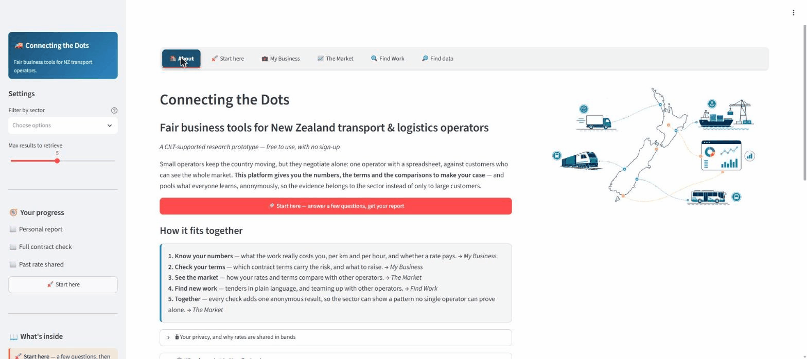
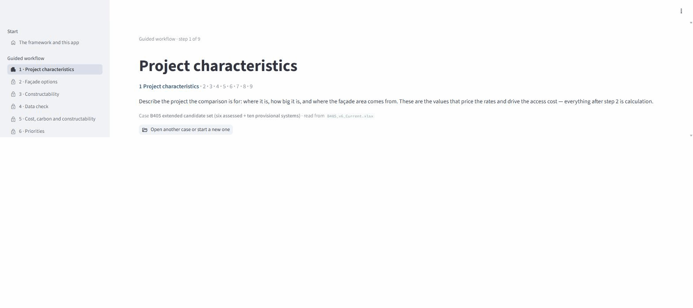
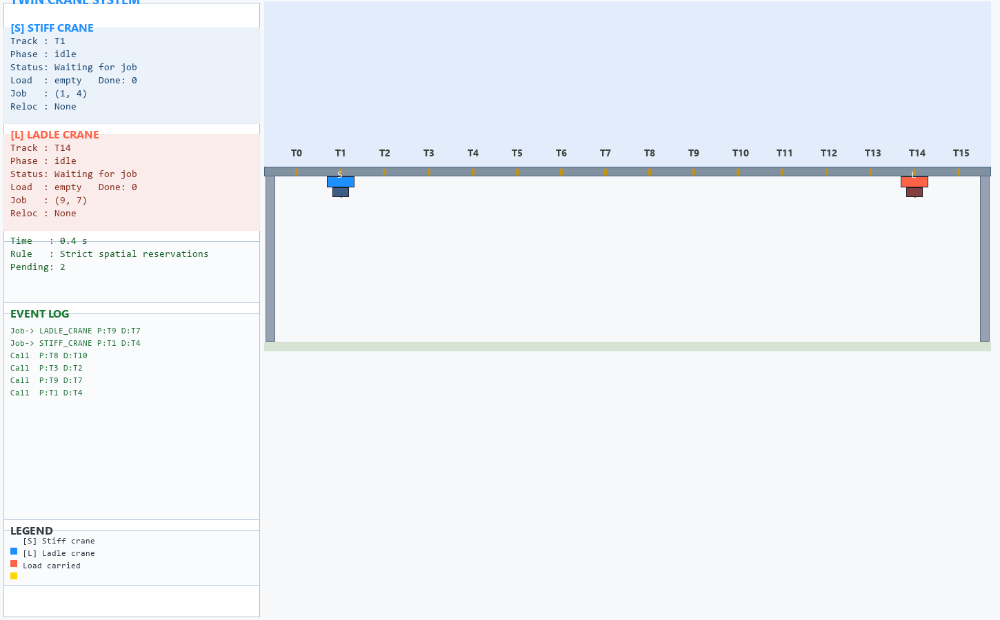
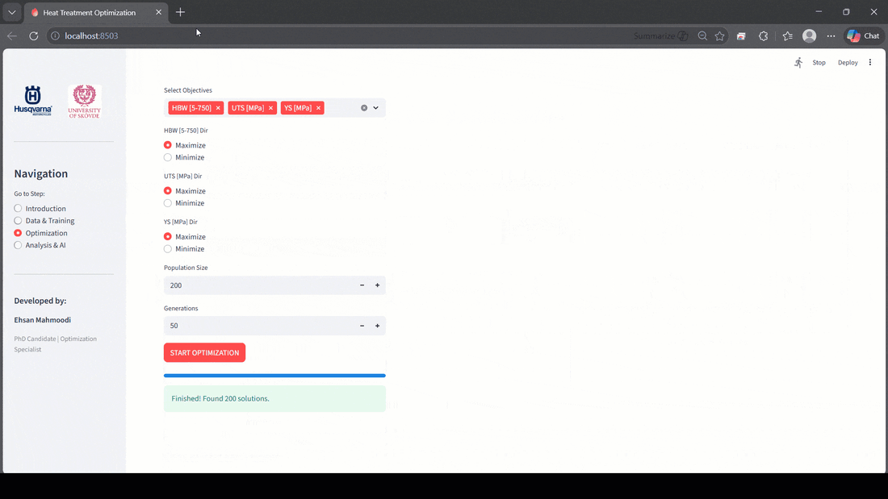
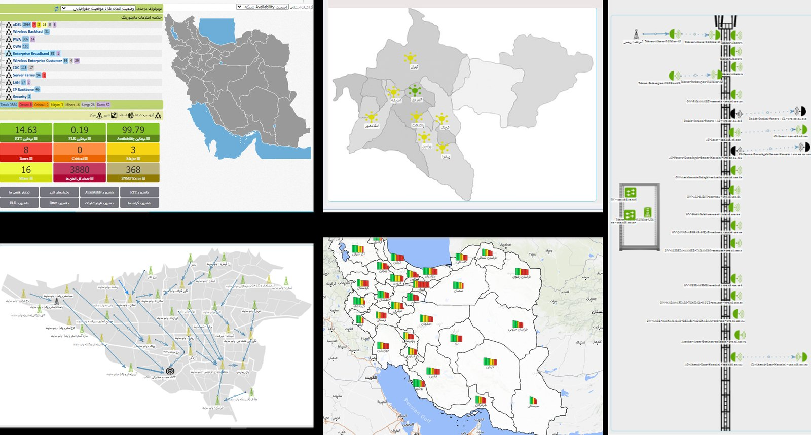
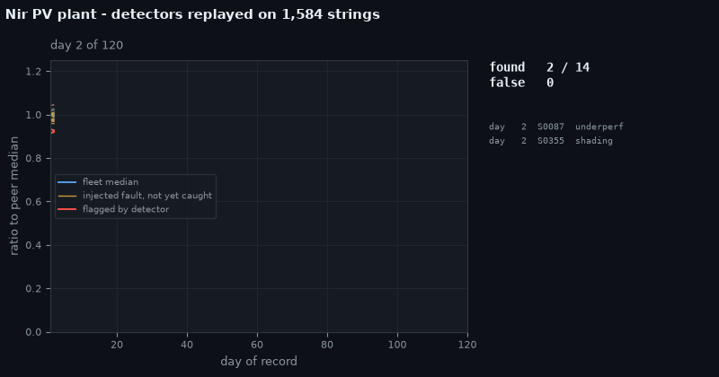
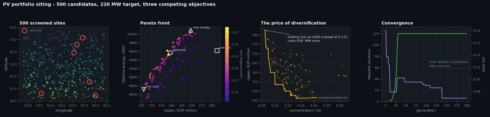

I build AI-enhanced decision systems — software that tells an organisation what to do next, and what it costs to do something else.
Most analytics stops at describing what happened. My work goes one step further and produces the decision itself: how many vehicles to run, when to schedule maintenance, which material to specify, how many service centres a region needs. Optimisation and simulation underneath, a working application on top, and a business case that says plainly whether it pays.
I ship the tool, not the slide deck. Research prototype through to a deployed application that people log into and use on a Monday.
The part most teams are missing. Dashboards report the past; these systems recommend an action and show what the alternatives would have cost.
Twenty years of operations knowledge behind the code. I know what a shop floor, a ward or a depot actually does before I model it.
Every model has to end in a number someone can act on. If it does not pay, I say so before the money is spent.
Peer review as quality control. Methods that hold up when someone competent tries to break them, and funding that follows the result.
Current work, with the University of Auckland and AUT — research prototypes built to be used by the operators and specifiers they are aimed at, not only written up.

Small transport operators negotiate alone — one operator with a spreadsheet, against customers who can see the whole market. The platform gives them the numbers, the terms and the comparisons to make their case.

The cheapest cladding is rarely the lowest carbon, and the lowest carbon is often the hardest to build. Rather than collapse that into one score, all three are assessed and the trade-off is handed to the specifier.

Two cranes on one rail that cannot pass each other. The hard part is not scheduling them but recovering when both are loaded and facing each other.
Nothing in this region matches the current filter.
Doctoral and post-doctoral research at the University of Skövde, inside industry-funded programmes with Volvo Penta, Scania, ABB, Husqvarna, Daloc and Xylem.
With Volvo Penta, ABB, Daloc and Xylem. A resilient factory is not one that never gets hit — it is one whose output dips shallowly and recovers fast.
AI-COMPETE, with Volvo Penta, Scania and Daloc. Productivity and carbon pull against each other, so the system is built as agents that negotiate rather than one objective that quietly sacrifices the other.
ACCURATE 4.0, the programme my doctoral work sat inside. Three strands: line balancing with human-robot collaboration, dynamic bottleneck analysis, and AR-assisted collision avoidance.

Austempering parameters for ductile iron used to be found by running physical experiments. This platform predicts the outcome instead, and explains the prediction to the engineers who have to trust it.
Nothing in this region matches the current filter.
Sixteen years of industrial and consulting delivery before Europe — hospitals, process plants, an offshore fleet, a 10 MW solar farm and a national service rollout.

A live twin of a nationwide telecom network. Two failure modes had to be planned for differently: a wired run fails outright, a wireless hop degrades gradually.
Sales, R&D, service quality and operations each had their own dashboards, and none explained whether the company was getting closer to its strategic goals.
An on-grid solar plant taken from site assessment through to signed PPA, land, permits and international due diligence. I authored the project profile and the financial model.

A 10 MW plant has 1,584 strings and one maintenance crew. A disconnected string is obvious; a string running 7% low is worth real money and is invisible on a plant dashboard. Absolute thresholds fail, because performance ratio moves with season and temperature.

A pre-study screens a region down to 500 candidate points. Which 220 MW do you build? The criteria disagree by construction: the best irradiation is far from substations, the cheapest land is far from roads, and substations sit where land costs most.
Benchmarking hospital logistics units where the normal inventory trade-off breaks down: a stockout of a critical item is not a cost line, it is a clinical event.
Two decisions that cannot be taken separately: assign tasks to stations under precedence and cycle time, then sequence the variants so no station is repeatedly overloaded.
Productivity criteria influence each other — capital investment changes labour requirements, which changes process design. A plain AHP hierarchy cannot express that.
A zinc plating operation whose sulfuric acid unit runs as a side product — not the revenue line, but stopping it stops plating. Three strategies compared over eighteen scenarios on 24/7 operation.
One procedure table, three procedure types and no fixed admission schedule — patients are called when their cardiologist happens to be in the lab.
New patients and post-operative reviews share the same corridor, and the doctor is the bottleneck for both.
Process design for the centres where citizens collect a digital ID: the service steps, the data transitions behind them, and what the data centre has to carry. Applicants do not arrive as one population.
How many vessels does an offshore field actually need, and on what routes, when demand is stochastic and weather takes vessels out of service unpredictably?
My bachelor thesis was a study of transesterification chemistry. It never said who would build the plant, where the oil would come from, or whether the numbers closed. I went back and did that part: a 3,000 t/yr plant sized for an agricultural cooperative.
Nothing in this region matches the current filter.